Томат – растение семейства Паслёновые, одно- или многолетняя трава.
Возделывается как овощная культура. Плоды томата известны под названием помидоры.
Название помидор происходит от итальянского pomo d'oro – золотое яблоко. Настоящее
название было у ацтеков – матль, французы переделали его в tomate (томат).
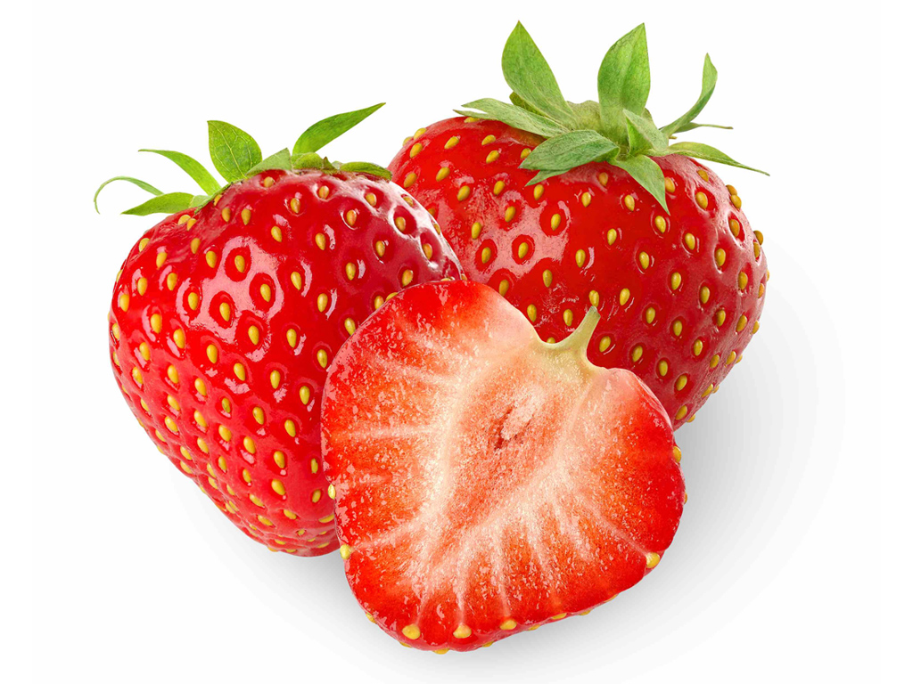
Плоды клубники, представляют собой так называемые ложные ягоды.
Дело в том, что «ягода» клубники не является её плодом. Это просто разросшееся цветоложе,
на поверхности которого находятся настоящие плоды клубники — орешки.
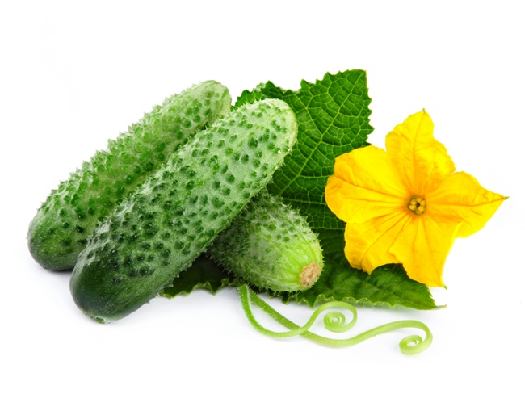
Огурцы – самая древняя овощная культура. Огурцы чем меньше, зеленее и недозрелее,
тем лучше и вкуснее. В античные времена греки их называли «агурос»: что означает
«неспелый, несозревший». Отсюда и пошло их название – огурец.
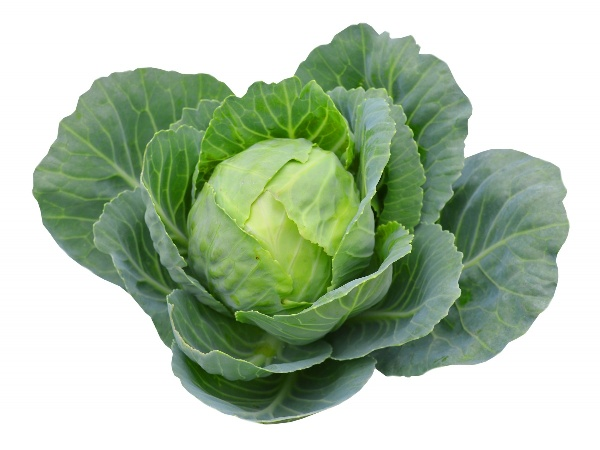
Капуста – двулетнее растение, сельскохозяйственная культура, вид рода Капуста.
Капуста огородная возделывается на огородах по всему свету, за исключением крайних
северных районов и пустынь. Как культурное пищевое растение распространена во всех
странах с умеренным климатом.
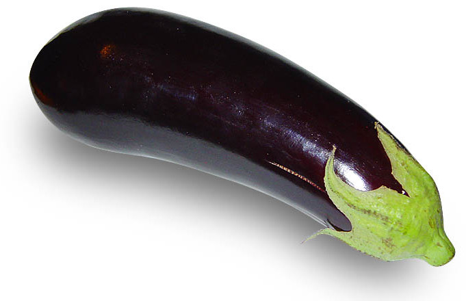
Баклажан – вид многолетних травянистых растений рода Паслён, овощная культура.
В диком виде баклажан произрастал в Восточной Индии, но уже более 1500 лет назад
был окультурен и выращивался в Китае и в странах Центральной Азии. Распространился
этот овощ благодаря арабам, завёзшим баклажан в Африку и в европейское
Средиземноморье.
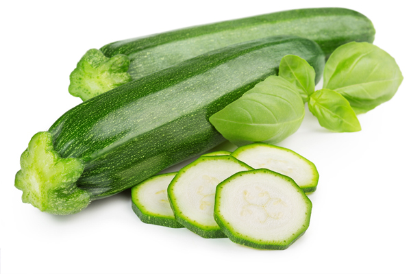
Кабачок (лат. Cucurbita pepo var. giromontina) — однолетнее травянистое растение,
семейства тыквенных, был завезён в Европу из Америки в 16 веке. Индейцы племени
Ирокез в течение 10 тысячелетий традиционно употребляли кабачки в пищу и считали
их своей основной едой вместе с тыквой, фасолью и кукурузой
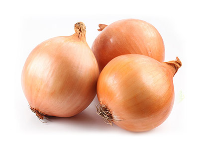
Лук репчатый - одна из самых древних овощных культур.
В Китае, Иране, странах Средиземноморья он был известен за 4000 лет до нашей эры.
В Россию лук пришел с берегов Дуная в начале XII века. Репчатый лук - растение
многолетнее.В первый год из семени вырастает луковичка диаметром 1-2,5 см (лук-севок).
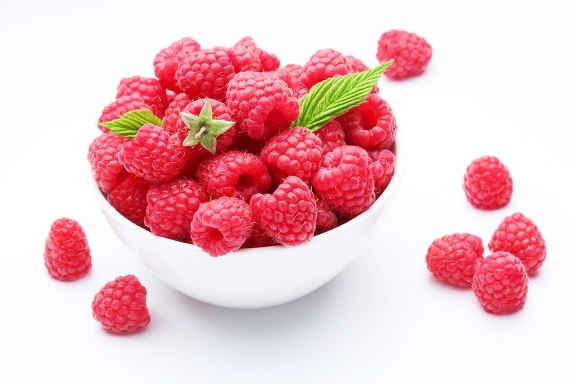
Малина обыкновенная – это кустарниковое растение из семейства розоцветных,
вырастающее в среднем до 1,5 м в высоту, имеющее колючие ветви и ароматные
вкусные плоды. Ближайшими родственниками малины считается костяника, ежевика,
поляника и морошка.
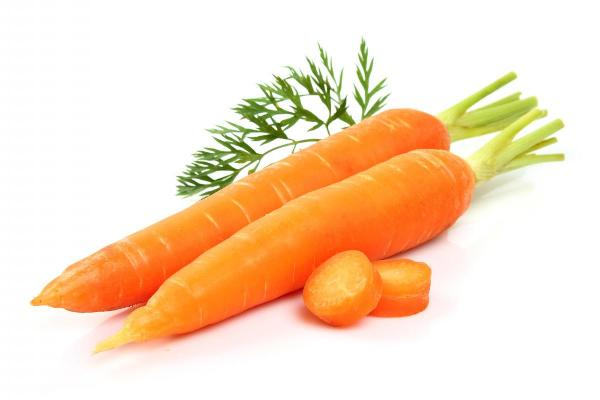
Морковь – двулетнее растение, в первый год жизни образует розетку листьев и
корнеплод, во второй год жизни – семенной куст и семена. Морковь широко
распространена, в том числе в средиземноморских странах, Африке, Австралии,
Новой Зеландии и Америке (до 60 видов).
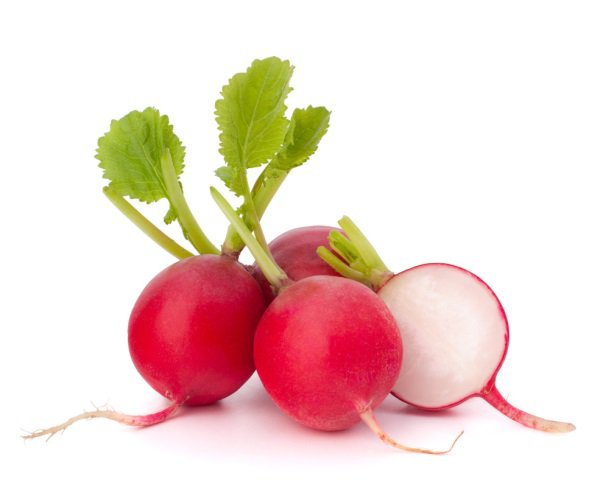
Редис - съедобное растение и выращивается как овощ во многих странах мира.
Его название происходит от лат. radix — корень. В пищу обычно употребляют
корнеплоды, которые имеют толщину до 3 см и покрыты тонкой кожей, окрашенной
чаще в красный, розовый или бело-розовый цвет. Корнеплоды редиса имеют острый вкус.
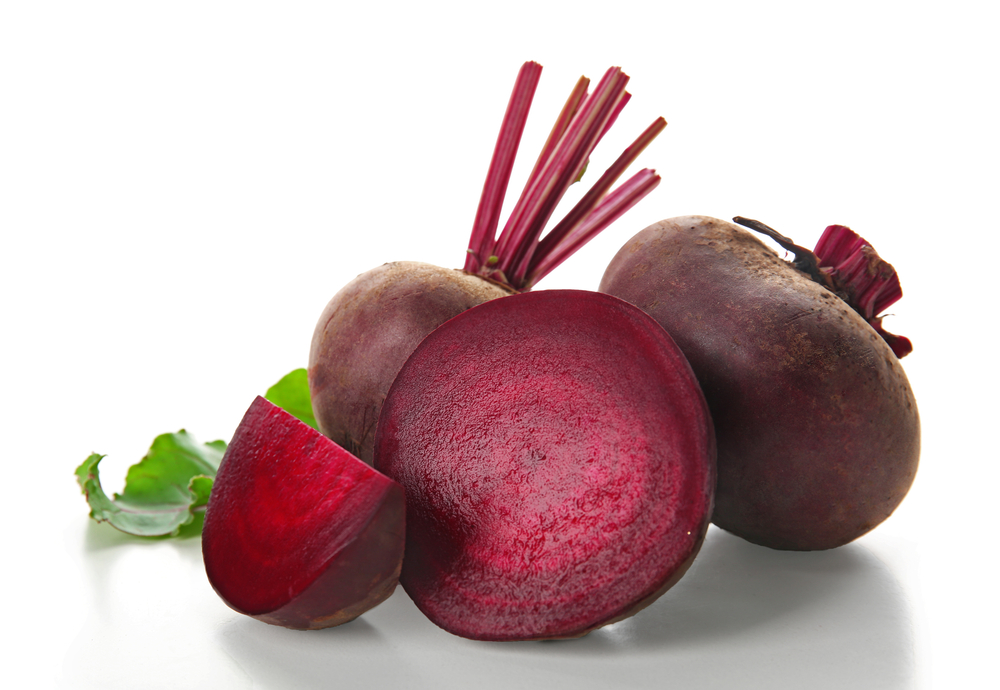
Свекла – род одно-, дву- и многолетних травянистых растений семейства Амарантовые
(ранее род относился к семейству Маревые).
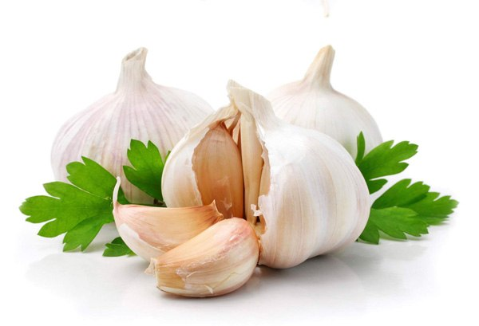
Чеснок - многолетнее травянистое растение, принадлежащее к семейству луковых.
Его сложная луковица состоит из 3-20 луковичек - зубков. Время цветения чеснока
приходится на июль - август месяц. Высота растения от 30 до 60 сантиметров.
Цветки - зеленовато-белые, собранные в простой шаровидный зонтик, вместе с маленькими
луковичками.